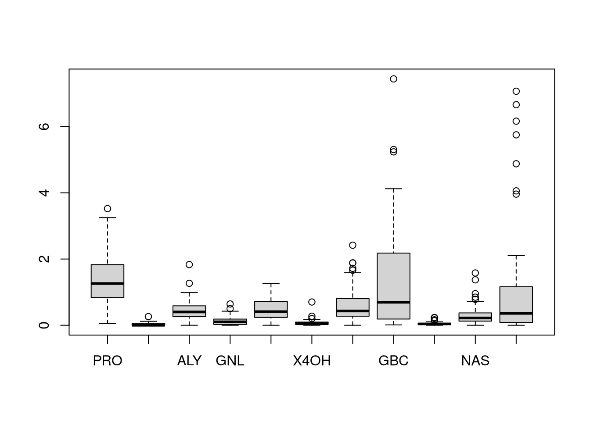
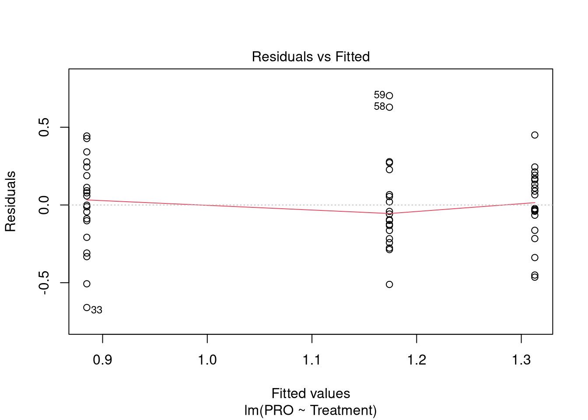
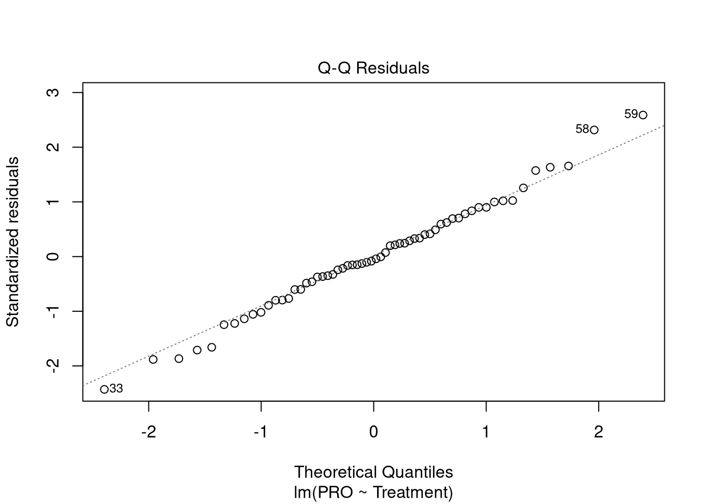
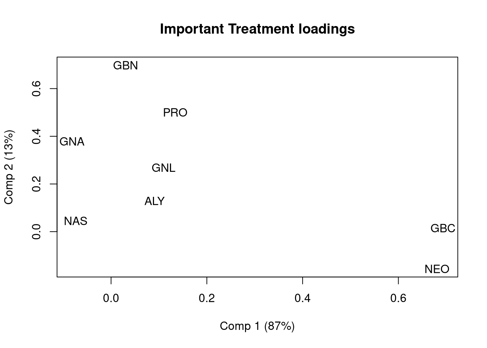
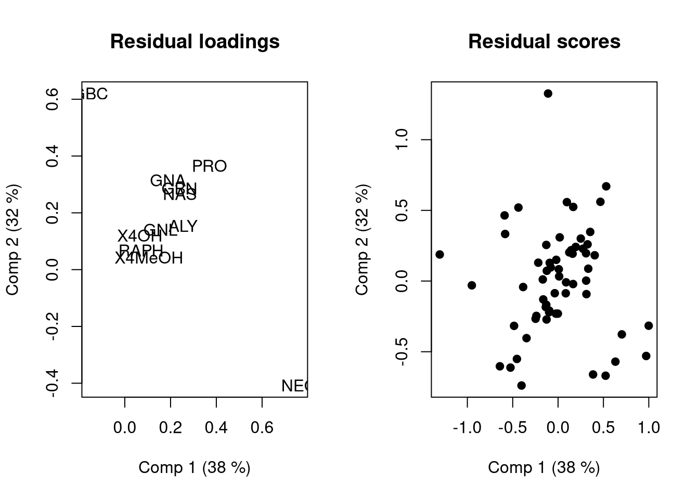
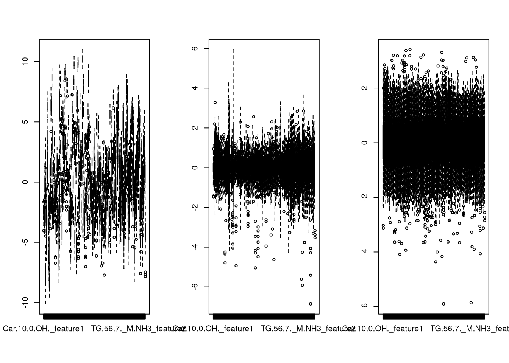
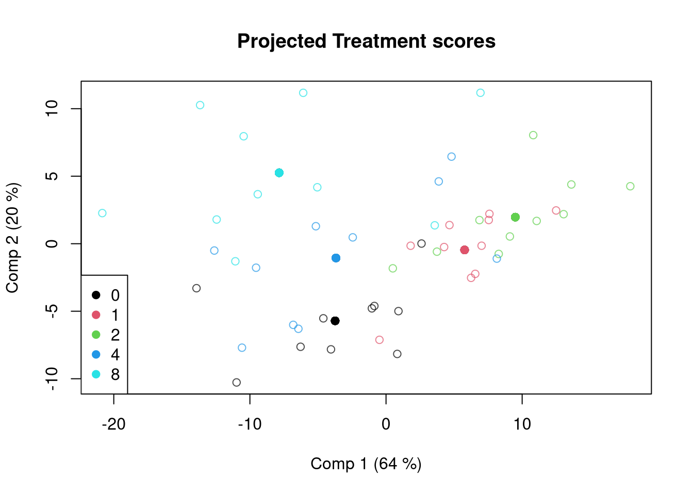
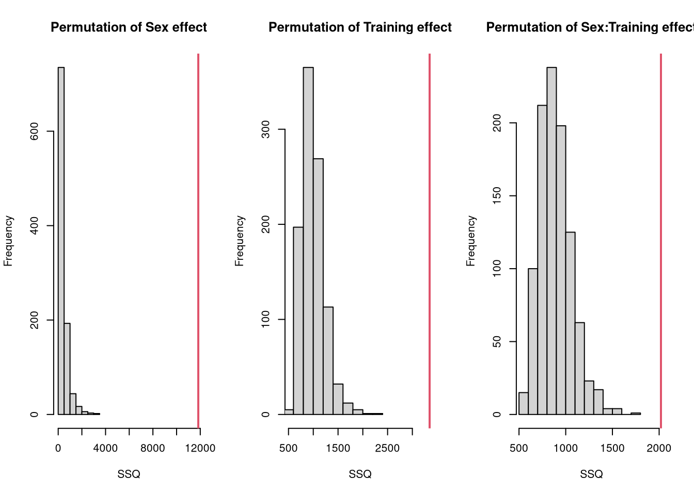

Registered S3 method overwritten by 'lme4':
method from
na.action.merMod car
# in newer version of R you can also use pakage manager pak to install these packages# pak::pak("khliland/mixlm")# pak::pak("khliland/HDANOVA")# load the librarieslibrary(mixlm)
Attaching package: 'mixlm'
The following objects are masked from 'package:stats':
glm, lm
library(HDANOVA)
Attaching package: 'HDANOVA'
The following object is masked from 'package:mixlm':
RMSEP
The following object is masked from 'package:stats':
loadings
Exercise during lecture
# create a simple dataset with 3 groups and 12 samples# create response variable y and two different design matrices for the same grouping, one with reference coding and one with sum codingy =c(5,6,7,6,3,2,4,3,1,2,3,1)X0 =c(1,1,1,1,1,1,1,1,1,1,1,1) # not needed in calculation; Intercept is automatically calculated in lm function# create design matrices for reference coding and sum codingXr1 =matrix(c(0,0,0,0,1,1,1,1,0,0,0,0,0,0,0,0,0,0,0,0,1,1,1,1),ncol =2) # Xs1 =matrix(c(-1,-1,-1,-1,1,1,1,1,0,0,0,0,-1,-1,-1,-1,0,0,0,0,1,1,1,1),ncol =2)# make linear models with reference coding and sum codingbref =lm(y~Xr1)bsum =lm(y~Xs1)# look at the summary of both modelssummary(bref)
Call:
lm(formula = y ~ Xr1)
Residuals:
Min 1Q Median 3Q Max
-1.0000 -0.7500 0.0000 0.4375 1.2500
Coefficients:
Estimate Std. Error t value Pr(>|t|)
(Intercept) 6.0000 0.4330 13.856 2.24e-07 ***
Xr11 -3.0000 0.6124 -4.899 0.000849 ***
Xr12 -4.2500 0.6124 -6.940 6.76e-05 ***
---
Signif. codes: 0 '***' 0.001 '**' 0.01 '*' 0.05 '.' 0.1 ' ' 1
s: 0.866 on 9 degrees of freedom
Multiple R-squared: 0.8497,
Adjusted R-squared: 0.8163
F-statistic: 25.44 on 2 and 9 DF, p-value: 0.0001977
summary(bsum)
Call:
lm(formula = y ~ Xs1)
Residuals:
Min 1Q Median 3Q Max
-1.0000 -0.7500 0.0000 0.4375 1.2500
Coefficients:
Estimate Std. Error t value Pr(>|t|)
(Intercept) 3.5833 0.2500 14.333 1.67e-07 ***
Xs11 -0.5833 0.3536 -1.650 0.133358
Xs12 -1.8333 0.3536 -5.185 0.000575 ***
---
Signif. codes: 0 '***' 0.001 '**' 0.01 '*' 0.05 '.' 0.1 ' ' 1
s: 0.866 on 9 degrees of freedom
Multiple R-squared: 0.8497,
Adjusted R-squared: 0.8163
F-statistic: 25.44 on 2 and 9 DF, p-value: 0.0001977
Question: What are the differences in interpretation?
What are the estimates for \(\mu\), \(\alpha_1\), \(\alpha_2\), \(\alpha_3\) in both cases?
Reference coding forces the intercept to be equal to the groupmean of group 1. The a1 value is 0 as group 1 is the reference group.
For Sum coding \(\mu = 3.5833\), \(\alpha_1 = 2.4166\), \(\alpha_2 = -0.5833\), \(\alpha_3 = -1.8333\). The \(\alpha_1 = 2.4166\) value can be obtained as the sum of \(\alpha_1\), \(\alpha_2\) and \(\alpha_3\) has to be 0. Sumcoding makes the intercept to be equal to the average of all groups. The interpretation of the effects is therefore different between Reference and Sum coding. Note however, that the full model statistics are exactly equal.
Brassicaceae study
In this exercise you will use the HDANOVA and mixlm packages to explore linear models and ASCA for analysis of high dimensional data from an designed study setup.
Plants in the Cabbage family (Brassicaceae) make very specific defense compounds, called glucosinolates, when under attack by herbivores. There are about 120 different versions of these glucosinolates, but here we measure only 11. To simulate a herbivore attack and elicit the plant to make glucosinolates, the plant hormone jasmonic acid (JA) was applied to either the roots (Root induced) or to the leaves (Shoot induced) of cabbage plants (B. oleracea). The glucosinolate levels for 11 different glucosinolates were measured at 1, 3, 7 and 14 days after treatment. This measurement was destructive so that for each time-point different plants were analyzed. For each treatment, 5 different plants were measured at each time point. Besides the two treatments there was also a control group that received no JA treatment. We would like to know how the different treatments affect the glucosinolate composition and whether the glucosinolate composition varies with time.
# load data and designData =read.csv("Data.csv")Design =read.csv("F.csv")
In the Environment window (top right) click on Data and Design to see the content of these two sets. Data contains the measurements, and Design the experimental settings of the samples.
Question: Is the design balanced?
Answer
Yes, each combination of Treatment and Time has 5 replicates.
Question: What are important specifics you can observe by a quick look at the Data?
Answer
Some variables have many zeros, some variables have much higher values than others.
Data Preprocessing
First make a boxplot of the data to see which preprocessing steps should be taken.
boxplot(Data)

Question: Wat problematic issues do you observe for which variables?
Answer
Some features have few extreme large values (e.g. Neo, GBC), their distribution seems skewed to the right. Others have zero’s (feature 2, 6, 9 etc).
Sizes of the different features are also different (GBC and NEO are large).
In such a case a square root transform is often a good choice to preprocess the data.
Question: Explain why a square root transform is a useful transformation for these data.
Answer
If there is more variation between the replicates for higher values of a feature (the feature distribution is rights skewed), then a transformation can correct that.
If there are zero values, a log transform is problematic. A square root transform does not have problems with zero values, and makes the distributions more symmetric around the mean. A square root transform also makes the sizes of the features more equal.
Make a data frame containing factors Time and Treatment and Data.
# Make a data frame containing factors Time and Treatment and Datadat =data.frame(sqrt(Data),Design);dat$Time =as.factor(dat$Time)dat$Treatment =as.factor(dat$Treatment)
Linear models and ANOVA
To explore the effect of the treatments on the glucosinolates, let’s start with an ANOVA model for a single response using the lm function. By default the lm function uses SUM coding for the treatment levels.
# make 1-way ANOVA model for PRO using Treatment as a factormod_Treatment =lm(PRO~Treatment, data = dat)print(anova(mod_Treatment))
Analysis of Variance Table
Response: PRO
Df Sum Sq Mean Sq F value Pr(>F)
Treatment 2 1.9070 0.95350 12.279 3.677e-05 ***
Residuals 57 4.4261 0.07765
---
Signif. codes: 0 '***' 0.001 '**' 0.01 '*' 0.05 '.' 0.1 ' ' 1
There is clearly a difference between the treatments as the p-value is very low. The summary command wil provide some more info on the treatment levels, and provide residual plots to check the assumptions on the residuals.
# Get a little bit more informationsummary(mod_Treatment)
Call:
lm(formula = PRO ~ Treatment, data = dat)
Residuals:
Min 1Q Median 3Q Max
-0.65977 -0.16330 -0.01696 0.17395 0.70311
Coefficients:
Estimate Std. Error t value Pr(>|t|)
(Intercept) 1.12393 0.03597 31.242 < 2e-16 ***
Treatment(control) -0.23904 0.05088 -4.698 1.7e-05 ***
Treatment(root) 0.18896 0.05088 3.714 0.000466 ***
---
Signif. codes: 0 '***' 0.001 '**' 0.01 '*' 0.05 '.' 0.1 ' ' 1
s: 0.2787 on 57 degrees of freedom
Multiple R-squared: 0.3011,
Adjusted R-squared: 0.2766
F-statistic: 12.28 on 2 and 57 DF, p-value: 3.677e-05
plot(mod_Treatment, which =1:2)


Question: Explain why the effect of one of the treatment levels is not calculated. How can you obtain information about this level?
Answer
If all levels are represented in the design matrix, and the intercept is estimated as well, then there are too many free parameters leading to a situation with infinite number of solutions. By forcing the extra restriction that all treatment effect add up to 0 (which is the result of Sum coding) this situation is solved. The shoot level effect, which is not estimated, thus equals 0.05008.
Question: What is your interpretation of this model? What can you say about the root, shoot and control levels? How can you interpret the residual plots?
Answer
The intercept is the average value of all measurements.
The root treatment provides PRO levels on average 0.24 lower than the average, while the shoot treatment provides PRO levels 0.19 higher than the average.
The control level is not indicated, but the sum of all treatment levels equals zero, thus the control level provides PRO levels around 0.05 higher than the average.
The root and shoot levels are clearly different from zero according to the t-test.
The residual vs Fitted plot shows residuals are nicely spread around zero for all fitted values (which are 1.12 - 0.24 for control; 1.12+0.05 for control and 1.12+0.19 for shoot).
The QQ residuals plot to check normality shows only three samples with slightly higher residuals than expected. This shows that the residuals follow a normal distribution quite well.
Two-way crossed ANOVA
Instead of a single factor we also want to know the effect of both factors and also their interaction.
# two-way crossed ANOVAmod <-lm(GBN ~ Time*Treatment, data = dat) # Note the * means all main effects and interactionsprint(anova(mod))
Analysis of Variance Table
Response: GBN
Df Sum Sq Mean Sq F value Pr(>F)
Time 3 1.43105 0.47702 12.0563 5.286e-06 ***
Treatment 2 2.53574 1.26787 32.0447 1.446e-09 ***
Time:Treatment 6 0.58878 0.09813 2.4802 0.03598 *
Residuals 48 1.89916 0.03957
---
Signif. codes: 0 '***' 0.001 '**' 0.01 '*' 0.05 '.' 0.1 ' ' 1
For GBN, we see that both factors (Time and Treatment) are significant as is their interaction. Also here check the significance of the levels of each of the factors and interaction using the summary command.
Question: Explain your interpretation of this model.
Answer
For GBN there is a clear treatment effect and also some timepoints are different.
There is a single interaction clearly different from zero.
The GBN values at time 3 for the control treatment are 0.17 higher than could be expected from their main factor results control treatment effect and day 3 effect.
Different codings can be used for the factors. Here you can compare sum coding and treatment (reference) coding.
# Different codingsmod_sum <-lm(GBN ~ Time*Treatment, data = dat, contrasts ="contr.sum")print(anova(mod_sum))
Analysis of Variance Table
Response: GBN
Df Sum Sq Mean Sq F value Pr(>F)
Time 3 1.43105 0.47702 12.0563 5.286e-06 ***
Treatment 2 2.53574 1.26787 32.0447 1.446e-09 ***
Time:Treatment 6 0.58878 0.09813 2.4802 0.03598 *
Residuals 48 1.89916 0.03957
---
Signif. codes: 0 '***' 0.001 '**' 0.01 '*' 0.05 '.' 0.1 ' ' 1
Question: Discuss the differences between the two types of coding. When is one preferred over the other?
Answer
The difference is mainly what is considered the intercept (base level) of the model. If a control level is present, one would like to see how the treated level is different from the control instead of how the both differ from their average.
Question: What is the interpretation of the intercept in the models? What is the meaning of the estimated coefficients in each model?
Answer
In the SUM coded model, the intercept represents the overall mean, but in the treatment coding the intercept represents the mean of the Control treatment samples at time 1. Check this! The effects of the other levels mean the difference between those levels and the Control at time 1 level.
ASCA
ASCA generalizes ANOVA or the linear model to the multivariate setting. The models are applied to all response variables, and the variation due to the different factors (and their interactions) is summarized into effect matrices. Then a PCA model can be applied to each effect matrix separately of in combination to find variation that is systematic over all the variables. This variation is then summarized with PCA scores and loadings.
We will use the HDANOVA package to apply asca. The HDANOVA package expects to be in the long format. The next sections transforms the data from wide to long format. Furthermore, the factors Time and Treatment have to be defined as factors.
# Reshape data from wide to long formatMetabolites =data.frame(Time = dat$Time,Treatment = dat$Treatment, Metab =I(as.matrix(dat[,1:11])))Metabolites$Time =as.factor(Metabolites$Time)Metabolites$Treatment =as.factor(Metabolites$Treatment)
Then make an ASCA model of the metabolite data using both Time and Treatment as factors together with their interaction.
# ASCA model of all variables simultaneouslymod_asca <-asca(Metab ~ Time*Treatment, data=Metabolites)summary(mod_asca)
Anova Simultaneous Component Analysis fitted using 'lm' (Linear Model)
- SS type II, sum coding, restricted model, least squares estimation
Sum.Sq. Expl.var.(%)
Time 8.22 10.22
Treatment 39.74 49.42
Time:Treatment 5.72 7.12
Residuals 26.72 33.24
Open de mod_asca list and look at all the parameters that have been calculated. Click the scores section. The scores are calculated For each of the effect matrices. This is also the case for the loadings and Projected scores. The latter are the score values calculated with back projection, using the residuals and the effect matrices together, as discussed in the lecture.
# For more control you can obtain information from the mod_asca list, e.g. when you only want to plot the top 8 loadings# Loading plot for only important loadingsVar_Exp_Treatment =round(100* mod_asca[["singulars"]][["Treatment"]]^2/sum(mod_asca[["singulars"]][["Treatment"]]^2))P_Treatment = mod_asca[["loadings"]][["Treatment"]];Importance = P_Treatment[,1]^2+ P_Treatment[,2]^2;NIMP =8; # number of important variablessorted_Importance =sort(Importance, decreasing =TRUE, index.return =TRUE)Importance_Index = sorted_Importance$ix[1:NIMP]plot(P_Treatment[Importance_Index,1],P_Treatment[Importance_Index,2],type ="n",xlab=paste0("Comp 1 (", Var_Exp_Treatment[1], "%)"), ylab=paste0("Comp 2 (", Var_Exp_Treatment[2], "%)"), main ="Important Treatment loadings")text(P_Treatment[Importance_Index,1],P_Treatment[Importance_Index,2],colnames(Data[,Importance_Index]))

Question: What is your interpretation of the ASCA model of the Treatment factor?
Answer
There is a clear difference between the shoot and control treatments, which are described by the 1st PC of the treatment factor. GBC and NEO have the largest contribution to this effect.
The 2nd PC which is much smaller wrt explained variation shows how the root treatment is different from control and shoot, and here GBN and PRO have the largest contribution. Check this by looking in the data whether this observation is correct!
It is important to check whether the factors and interactions are significant. This can be done using permutation testing.
Question: What conclusion can you draw from the permutation test results?
Answer
Both factors as well as the interaction have a significant effect on the glucosinolate levels. For the main effects none of the permutations gave better results than the true grouping, while for the interaction only few permutations were larger than the true grouping.
Combining Main and Interaction effects
Sometimes it makes sense to combine effects, e.g., a main factor and an interaction. This is especially the case when the effect of Treatments are studied over Time. Here we combine the effects of Treatment and the Time:Treatment interaction. Note the effect matrices of Treatment and Time:Treatment are estimated independently, but the PCA is applied on the sum of these two effect matrices.
mod.comb <-asca(Metab ~ Time +comb(Treatment + Time:Treatment), data=Metabolites)summary(mod.comb)
Anova Simultaneous Component Analysis fitted using 'lm' (Linear Model)
- SS type II, sum coding, restricted model, least squares estimation
Sum.Sq. Expl.var.(%)
Time 8.22 10.22
Treatment+Time:Treatment 45.47 56.54
Residuals 26.72 33.24
If combined effects have a Time factor, the scores can be plotted against the time using the timeplot function. For this plot the legend command has to be called separately.
par(mfrow=c(1,2), mar =c(4,4,1,1))timeplot(mod.comb, factor="Treatment", time="Time", comb=2, comp=1, x_time=TRUE)
Warning in timeplot(mod.comb, factor = "Treatment", time = "Time", comb = 2, :
NAs introduced by coercion
Question: Give your interpretation of this combined effect.
Answer
In the scoreplot we see the combined effect of Treatment and Time:Treatment interaction. This shows that the effect of the treatments is not constant over time. The biological explanation is that both root and shoot treatments have an effect, but after day 3, the root effect disappears and the glucosinolate levels go back to the control values. The shoot effect however is consistent and even increases over time. Variables 8 (GBC) and 11 (NEO) are largely effected by these treatment differences.
Finally, it can be useful to also explore the residual matrix to see whether there are effects in the data that is not modeled for.
# Make score and loading plots and interpret.par(mfrow=c(1,2)) loadingplot(mod.comb, factor="Residuals", scatter=TRUE, labels="names", main="Residual loadings")scoreplot(mod.comb, factor="Residuals", main="Residual scores")

Question: Why is it useful to also explore the residuals and interpret the PCA model of the residuals.
Answer
We can see that some plants (the cluster bottom right deviate from the main group. These will have higher values of NEO and lower values of GBC than the other plants.)
Additional exercises
In this 2nd exercise you have to do some coding yourself. Look at the code provided above to see how to use the functions.
The MoTrPAC data
The Molecular Transducers of Physical Activity Consortium (MoTrPAC) profiled the dynamic change of multiple omics layers in several organs of rats undergoing physical training. The results are presented in the Nature article “Temporal dynamics of the multi-omic response to endurance exercise training”. https://www.nature.com/articles/s41586-023-06877-w The data was obtained from their website MoTrPAC-data.org.
Experimental design
Six-month-old male and female Fischer 344 rats were subjected to progressive treadmill endurance exercise training for 1, 2, 4 or 8 weeks. Sex-matched sedentary, untrained rats were used as controls (0). In this application we will focus on metabolomics data from plasma. Unfortunately these measurements do not all come from the same rats. Note that Females have Sex = 1 and Males have Sex = 2.
Load and view the data
Load the metabolomics_Values (Data) and the metabolomics_Exp (Design) files. For visualization reasons we will only select the lipids subset.
As preprocessing we decided to not use a transformation of the data, but only use meancentering and scaling by the standard deviation of the lipid.
# load data and designdf_metabolomics_Values =read.csv("Plasma_Metabolomics_Values_ab.csv", row.names=1)df_metabolomics_Exp =read.csv("Plasma_Metabolomics_Exp_ab.csv", row.names=1)df_metabolomics_Lipids = df_metabolomics_Values[,80:613]# make boxplots of the data before preprocessingpar(mfrow=c(1,3)) boxplot(df_metabolomics_Lipids)# Preprocess the data by centering and scaling CData =scale(df_metabolomics_Lipids, center =TRUE, scale =FALSE)SData =scale(df_metabolomics_Lipids, center =TRUE, scale =TRUE)# Make boxplots of the data after centering and scalingboxplot(CData)boxplot(SData)

Question: Why did we preprocess the lipids data this way?
Answer
From the 1st boxplot we see that the Lipids data is not centered.
We can also see the distributions are not skewed but rather symmetrical around their mean, thus transformation is not necessary.
Scaling seems necessary as the ranges of the centered data are rather different for some metabolites.
Data handling
Just as above the data has to be made in the long format to be able to use the HDANOVA package. Make sure the factors Sex and Group are defined as factors.
# make the data frame in long formatData_Values_long =data.frame(Sex =as.factor(df_metabolomics_Exp$Rat.Sex), Training =as.factor(df_metabolomics_Exp$Group), Metabolites =I(as.matrix(SData)))
ASCA model of main factors:
Create an ASCA model using the only the main factors Sex and Training. Do not consider interaction terms yet.
# ASCA model of main factorsmod_asca1 <-asca(Metabolites ~ Sex + Training, data=Data_Values_long)# Look at the summary of the modelsummary(mod_asca1)
Anova Simultaneous Component Analysis fitted using 'lm' (Linear Model)
- SS type II, sum coding, restricted model, least squares estimation
Sum.Sq. Expl.var.(%)
Sex 11833.23 45.22
Training 3348.41 12.80
Residuals 10984.36 41.98
Question: Explain the meaning of Sum.Sq and Expl.var. What is your interpretation of the ASCA model?
Answer
Sum.Sq is the sum of squares of the effect matrix, calculated by squaring each element in the effect matrix and then adding all these values.
Expl.var is the percentage explained variation from the total variation in the Metabolites data. It is calculated by dividing the Sum.Sq of a factor (e.g. Sex) by the Sum.Sq of the original data (Metabolites).
There is a strong effect for factor Sex and a smaller effect for factor Training.
Visualization
Make score plots of the Training effect
Question: Show a score plot of the Training effect.
Answer
# Write your code for a score plots of the Training effect.scoreplot(mod_asca1, factor="Training", legend = ("bottomleft"), main="Projected Treatment scores")

Below the loading plots of PC1 vs PC2 of the Training factor is given. For visualization reasons we only show the most important variables.
# Loading plot of only 20 most important metabolites# determine explained variance per principal component Var_Exp_Training =100*(mod_asca1[["singulars"]][["Training"]]^2/sum(mod_asca1[["singulars"]][["Training"]]^2))Var_Exp_Training =round(Var_Exp_Training,0)# extract loadings of the Training factorP_Training = mod_asca1[["loadings"]][["Training"]];# combine the loadings of PC1 and PC2 into an importance valueImportance =sqrt(P_Training[,1]^2+ P_Training[,2]^2);NIMP =7; # number of important variables# sort the importance values and get the index of the top 20 most important variablessorted_Importance =sort(Importance, decreasing =TRUE, index.return =TRUE)Importance_Index = sorted_Importance$ix[1:NIMP]# plot the most important variables in the loading plotplot(P_Training[Importance_Index,1],P_Training[Importance_Index,2],xlab=paste0("Comp 1 (", Var_Exp_Training[1], "%)"), ylab=paste0("Comp 2 (", Var_Exp_Training[2], "%)"))text(P_Training[Importance_Index,1],P_Training[Importance_Index,2],colnames(df_metabolomics_Lipids[,Importance_Index]))
Question: Give your interpretation of the score and loading plots. [1]
Answer
The scoreplot shows the group average of the 5 training groups by the solid marker, while the individual rats are indicated with the open markers. Component 1 mainly makes a distinction between Training week1 and week2 on the right and the control (0), 4 and 8 weeks training samples are mainly on the left part of the plot. PC2 makes a distinction between Control and 8 weeks of training. The training groups are not well separated, however the upper left part seems to be mainly related to 8 weeks of training.
The upper left extreme loadings (LPC17.1.0.0_feature2 and LPC14.0.0.0_andLPC0.0.14.0_feature1and2) both have high values for 8 weeks of training.
ASCA model with interaction
Question: Make a new model in which the two-factor interaction Sex:Training is also included in the model.
Answer
# Write the code for an ASCA model including main factors and interactionmod_asca_Int <-asca(Metabolites ~ Sex*Training, data=Data_Values_long)# Provide the summary of the modelsummary(mod_asca_Int)
Anova Simultaneous Component Analysis fitted using 'lm' (Linear Model)
- SS type II, sum coding, restricted model, least squares estimation
Sum.Sq. Expl.var.(%)
Sex 11833.23 45.22
Training 3348.41 12.80
Sex:Training 2019.41 7.72
Residuals 8964.95 34.26
Question: What is your conclusion of this ASCA model with interaction?
Answer
The interaction explains an additional 7.7% of the variation in the data.
This means that the Time effect is somewhat different for males compared to females.
Statistical Inference
To conclude whether the main factors and interaction are significant, apply a permutation test and plot the permutation result using the permutation plot function for both main factors and the interaction.
# Permutation test for the ASCA model with interactionmod_asca_Int_perm <-asca(Metabolites ~ Sex + Training + Sex:Training, data=Data_Values_long, permute =TRUE)summary(mod_asca_Int_perm)
Anova Simultaneous Component Analysis fitted using 'lm' (Linear Model)
- SS type II, sum coding, restricted model, least squares estimation, 1000 permutations
Sum.Sq. Expl.var.(%) p-value
Sex 11833.23 45.22 0
Training 3348.41 12.80 0
Sex:Training 2019.41 7.72 0
Residuals 8964.95 34.26 NA
# make permutation plots for the main factors and the interactionpar(mfrow=c(1,3))permutationplot(mod_asca_Int_perm, factor ="Sex")permutationplot(mod_asca_Int_perm, factor ="Training")permutationplot(mod_asca_Int_perm, factor ="Sex:Training")

Question: Explain why in ASCA a permutation test is used and not an F-test.
Answer
The F-statistic assumes normally distributed data and also requires the degrees of freedom for each effect. We have not tested the normality of the data, and degrees of freedom is unclear in the multivariate situation.
Question: What is your interpretation of the permutation test?
Answer
The p-value for both the Sex factor and Training factor as well as for the interaction 0, meaning that none of the permutations provides a better result than the original. This can also be seen in the permutation plots. The conclusion is that the Sex levels (Male and Female) are different from eachother and also the training group levels and that the interactions are not 0, and thus have to be included in the model.
Finally we can make a plot of the combination Training + Sex:Training to visualize how the Females and Males deviate in their training effect. For this we:
Make ASCA model in which the Sex:Training interaction effect is combined with the main Training effect.
Determine the explained variance of the components in combination effect.
Make a score plot (using the timeplot function) of the combination effect. The PC1 scores of the Females and Males are plotted as a function of the training groups.
Make a loading plot for PC1 of the combination effect.
Also show a plot of only the interaction.
#1. Make Model with main factor Sex and combination of Group and Sex:Group interactionmod_comb1 <-asca(Metabolites ~ Sex +comb(Training+Sex:Training), data=Data_Values_long)summary(mod_comb1)
Anova Simultaneous Component Analysis fitted using 'lm' (Linear Model)
- SS type II, sum coding, restricted model, least squares estimation
Sum.Sq. Expl.var.(%)
Sex 11833.23 45.22
Training+Sex:Training 5367.82 20.51
Residuals 8964.95 34.26
#2. determine explained variance of the combination effectVar_Exp_Comb1 =100*(mod_comb1[["singulars"]][["Training+Sex:Training"]]^2/sum(mod_comb1[["singulars"]][["Training+Sex:Training"]]^2))Var_Exp_Comb1=round(Var_Exp_Comb1,0)#3.timeplot(mod_comb1, factor="Sex", time="Training", comb=2, comp=1, x_time=TRUE, ylab=paste0("PC1 (", Var_Exp_Comb1[1], "%)"))legend("topright",col =1:2,lty=1:2,levels(Data_Values_long$Sex))
Question: What is your interpretation of the combination effect (Training + Sex:Training), and of the interaction Sex:Training
Answer
The combination is significant (both factor Training and Sex:Training are significant).
Its scoreplot shows a Training time trend for each Sex.
Variation between the Training groups is somewhat larger for females than for males.
The metabolite levels change rapidly between 2 weeks and 4 weeks of training.
Note the differences between the loading plots for the combination and the interaction. The loading plot for the interaction only focuses on the difference between Females and Males, while the combination loadings combine the Main training variation with this difference between Females and Males. This results in different important features.